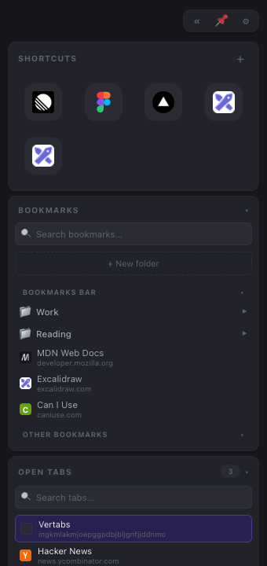
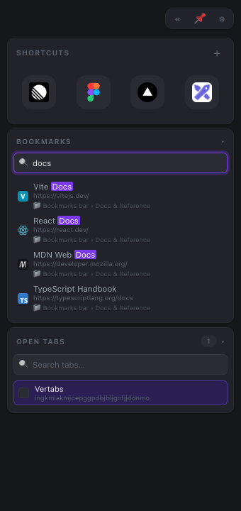
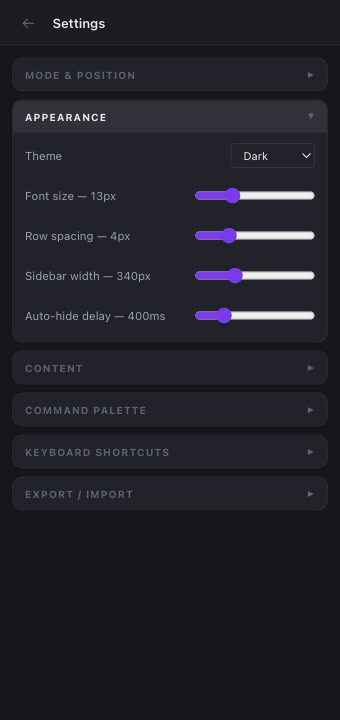
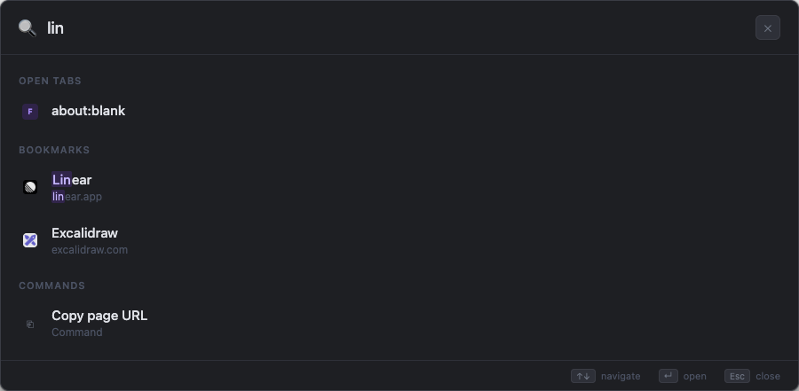

Vertabs adds a persistent sidebar to every page — shortcuts, bookmarks, and open tabs, always one hover away. No new tab required.

Everything you need
Your most-used sites as icon shortcuts, always visible. Backed by Chrome pinned tabs — click to jump back to the defined URL, no matter where the tab has navigated.
Browse your full bookmark tree in the sidebar. Fuzzy search across all folders with highlighted matches. Drag bookmarks straight onto shortcuts to pin them.
See every open tab across all windows, grouped by window. Search, focus, or close any tab without leaving the current page. Tab groups shown with their color.
Press ⌘⇧K to search tabs, bookmarks, and shortcuts — or run built-in commands like zoom, mute, duplicate, and more.
Choose from five built-in themes — Dark, Midnight, Forest, Rose, or Slate. Or go custom and pick your own accent, background, cards, and text colors.
Settings, shortcuts, and UI state sync automatically via chrome.storage.sync. Open Vertabs on any Chrome device and pick up exactly where you left off.
Type anything and Vertabs fuzzy-searches your entire bookmark library in real time. Matched characters are highlighted so you always know why a result appeared. Results show the folder path so you know exactly where each bookmark lives.

Switch between five carefully designed dark themes or craft your own with full color control. Accent, background, cards, and text colors all apply instantly — no page reload needed. Font size and spacing scale the entire UI proportionally.

Command palette
Press ⌘⇧K anywhere to open a full-page search overlay. Jump to any tab, bookmark, or shortcut — or run 16 built-in tab commands without touching your mouse.
